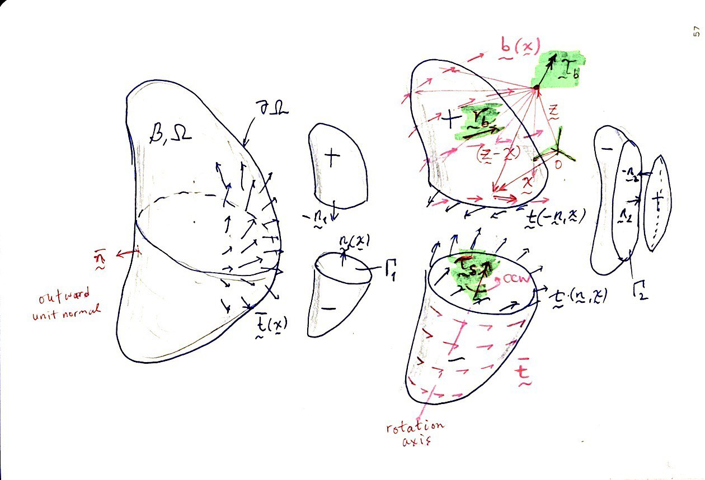

Unit 3: Mass and Force Concepts
Readings from Stuart and Gonzales, Chapter 3
2025-04-13
Table of Contents
(\(\S 3.1\)) Continuum Bodies (Session 9)

- What is the notion of a continuum? (ask chat AI)
- In this context define density of a material, \(\rho\) (units in mass/volume)
- We identify the placement of a material body as an open subset \(\mathcal{B}\) of Euclidean Space \(\mathbb{E}^3\)
- The placement of a body may change in time, i.e. \(\mathcal{B}=\mathcal{B}(t)\), under the effect of external factors.
- Study of the relationship between the change in placement and external factors, is called continuum mechanics.
(\(\S 3.2\)) Volume and Mass
- The mass of the body is distributed continuously throughout its volume.
- The volume of an arbitrary open subset \(\Omega\) of \(\mathcal{B}\) is \[\mathrm{vol}[\Omega] = \int_\Omega dV.\] where \(dV\) denotes an infinitesimal volume element at \(\boldsymbol{x}\in\Omega\).
- Let there be a mass density field per unit volume \(\rho:B\to\mathbb{R}\) such that \[\mathrm{mass}[\Omega] = \int_\Omega \rho(\boldsymbol{x})dV.\]
(\(\S 3.2.2\)) Centers of Volume and Mass
- By the center of volume of an open subset \(\Omega\) of \(\mathcal{B}\) we mean the point \[\boldsymbol{x}_\mathrm{cov} = \frac{1}{\mathrm{vol}[\Omega]} \int_\Omega \boldsymbol{x} dV.\]
- By the center of mass of an open subset \(\Omega\) of \(\mathcal{B}\) we mean the point \[\boldsymbol{x}_\mathrm{com} = \frac{1}{\mathrm{mass}[\Omega]} \int_\Omega \boldsymbol{x} \rho(\boldsymbol{x}) dV.\]
(\(\S 3.3\)) Body Forces
- The abstract notion describing the physical effect of attraction/repulsion.
- Units of force: Newton (SI), dyne (SI), pounds (US), etc.
(\(\S 3.3.1\)) Integrals (Resultant Forces)
- This term refers, in general, to any force field, \(\boldsymbol{b}(\boldsymbol{x})\), that does not arise from physical contact (between bodies).
- Example: gravity, \(g\) (has units of m/s\(^2\))
- It is usually measured in terms of the force field per unit mass (i.e. force/mass)
- Let \(\Omega\) be an the entire region enclosing \(\mathcal{B}\), or an arbitrary subset of it. Then the resultant force on \(\Omega\) due to a body force field is defined as \[\boldsymbol{r}_b[\Omega] = \int_\Omega \rho(\boldsymbol{x}) \boldsymbol{b}(\boldsymbol{x}) dV,\]
- and the resultant torque, about a point \(\boldsymbol{z}\), becomes \[\boldsymbol{\tau}_b[\Omega] = \int_\Omega (\boldsymbol{x} - \boldsymbol{z}) \times \rho(\boldsymbol{x}) \boldsymbol{b}(\boldsymbol{x}) dV.\]
Questions for next session
Ask AI:
- How can the stress tensor be introduced in a simple but mathematically concise manner?
Deliverables
Students should be able to:
[ ]use density to find continuum mass and center of mass
(\(\S 3.3.2\)) Surface Forces

- External traction field, \(\bar{\boldsymbol{t}}(\boldsymbol{x})\), arises on the external boundary of the three-dimensional domain, \(\Omega\), whereas internal traction fields, \(\boldsymbol{t}(\boldsymbol{n},\boldsymbol{x})\), arise over internal surfaces.
- \(\partial\Omega\) denotes the outer boundary of the domain \(\Omega\).
- \(\Gamma\) is used to denote arbitrary two-dimensional domains that separate \(\Omega\) into a negative (\(-\)) and a positive (\(+\)) side.
Definitions
- The force, per unit area, exerted by material on the positive side of the surface \(\Gamma\) upon material on the negative side is assumed to be given by a function \(\boldsymbol{t} (\boldsymbol{n}, \boldsymbol{x}): \mathcal{N} \times \mathcal{B} \to \mathcal{V}\), which we call the traction function.
- When the surface \(\Gamma\) is part of of the bounding surface \(\partial\mathcal{B}\), the external tractions imposed upon the body are denoted as \(\bar{\boldsymbol{t}} = \boldsymbol{t} (\bar{\boldsymbol{n}}, \boldsymbol{x})\), where \(\bar{\boldsymbol{n}}\) denote the outward unit normal field.
Integrals (Resultant Forces)

- Similar to the integrals of body forces we define the resultant force due to a traction field over \(\boldsymbol{r}_s[\Omega]\), due to (surface) boundary tractions as \[\boldsymbol{r}_s[\partial\Omega] = \int_{\partial\Omega} \bar{\boldsymbol{t}} dA,\]
- and the resultant torque about point \(\boldsymbol{z}\), \(\boldsymbol{\tau}_s[\partial\Omega,\boldsymbol{z}]\) as \[\boldsymbol{\tau}_s[\partial\Omega] = \int_{\partial\Omega} (\boldsymbol{x} - \boldsymbol{z}) \times \bar{\boldsymbol{t}} dA.\]
Postulate of action/reaction
The tractions at a point \(\boldsymbol\) over a plane with normal \(\boldsymbol{n}\) are equal and opposite of those that occur on the reciprocal (flipped) plane. \[\boldsymbol{t} (\boldsymbol{-n}, \boldsymbol{x}) = - \boldsymbol{t} (\boldsymbol{n}, \boldsymbol{x})\]
- Draw an image depicting a pair of reciprocal planes at an arbitrary point in \(\mathcal{B}\).
- Draw the tractions occuring over the reciprocal planes.
Cauchy’s Stress Postulate

- Imagine a tetrahedron in \(\mathcal{B}\) with three edges parallel to the coordinates \(x_i\) cornered at point \(\boldsymbol{x}\), intersected by a plane with unit normal \(\boldsymbol{n}\) as shown in the figure above.
- The internal traction vector on the plane with unit normal $\boldsymbol{n} is \(\boldsymbol{t} (\boldsymbol{n}, \boldsymbol{x})\)
- The internal traction vectors on the coordinate planes having normals \(-\boldsymbol{e}_j\) are \(\boldsymbol{t} (-\boldsymbol{e}_j, \boldsymbol{x})\)
- By extending the arguments of force equilibrium the above tractions can be shown to obey \[\boldsymbol{t} (\boldsymbol{n}, \boldsymbol{x}) + \sum_{j=1}^3 \boldsymbol{t} (-\boldsymbol{e}_j, \boldsymbol{x}) n_j = \boldsymbol{0}.\]

- It can be argued that there exists a second-order tensor field, \(\boldsymbol{S} (\boldsymbol{x}):\mathcal{B} \to \mathcal{V}^2\), called the stress field, which is a transformer between the unit normal field and the traction field given as \[\boldsymbol{t}(\boldsymbol{n}, \boldsymbol{x}) = \boldsymbol{S}(\boldsymbol{x}) \boldsymbol{n},\]
- where \(S_{ij} = t_i(\boldsymbol{e}_j, \boldsymbol{x})\)